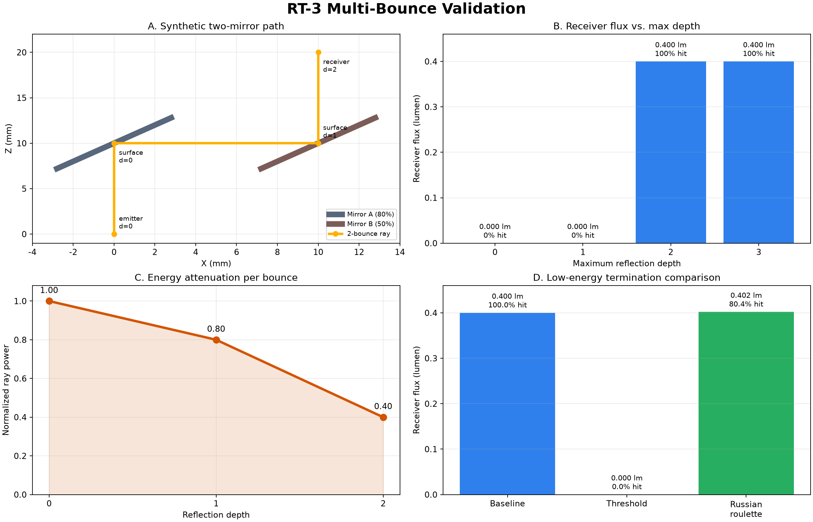

Two specular mirrors require two reflections before the receiver. The expected optical throughput is 1.0 × 0.8 × 0.5 = 0.4 lumen.

| Case | Depth | Termination | Hits | Hit ratio | Flux (lm) | Runtime (s) |
|---|---|---|---|---|---|---|
| max_depth=0 | 0 | threshold | 0 | 0.0% | 0.000000 | 0.0542 |
| max_depth=1 | 1 | threshold | 0 | 0.0% | 0.000000 | 0.1155 |
| max_depth=2 | 2 | threshold | 5000 | 100.0% | 0.400000 | 0.1855 |
| max_depth=3 | 3 | threshold | 5000 | 100.0% | 0.400000 | 0.1829 |
| threshold termination | 2 | threshold | 0 | 0.0% | 0.000000 | 0.1179 |
| russian roulette | 2 | russian_roulette | 4020 | 80.4% | 0.402000 | 0.1859 |